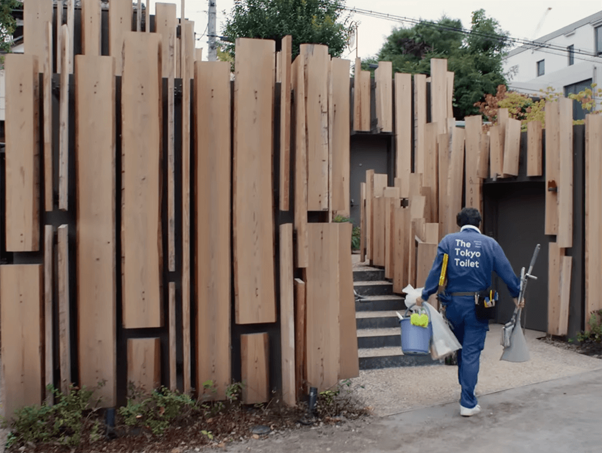
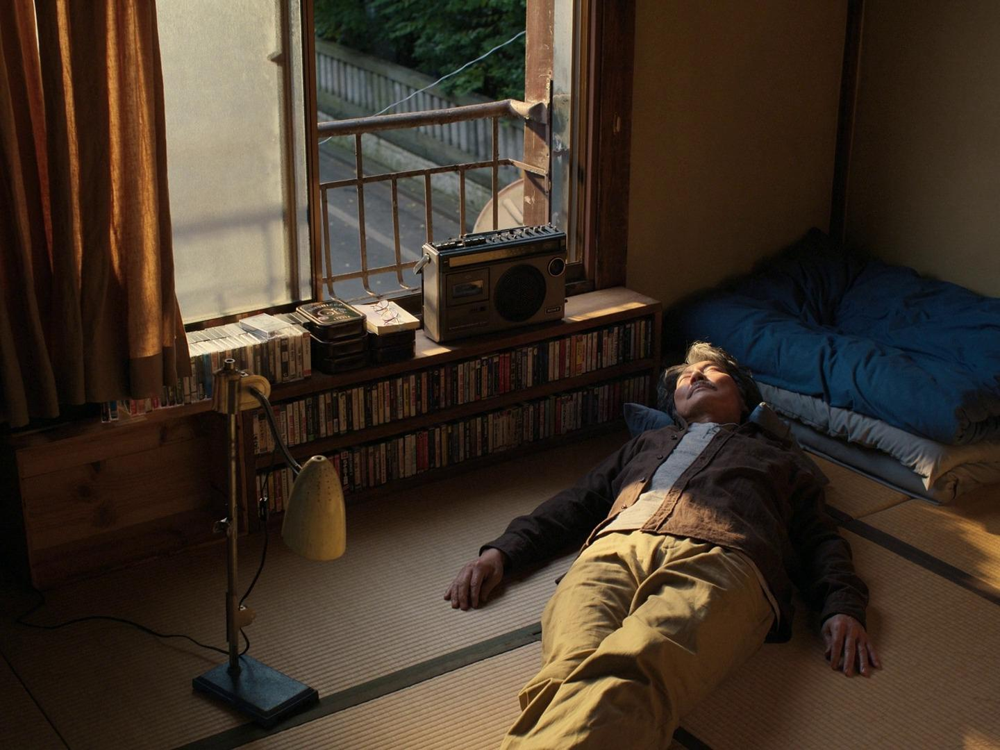

Perfect
Days
Wim Wenders

Hace unos días vi Perfect Days, de Wim Wenders
Inmediatamente entendí que esta película me marcaría. Perfect Days recorre la vida de Hirayama, un limpiador de baños públicos en Tokio. Y tengo que admitir que, tan solo al observar la infraestructura de los baños públicos de la ciudad, resulta evidente cómo esta película se convierte también en una pieza de memoria y reconocimiento hacia una arquitectura gentil, en contraste con aquello que solemos encontrar en otras ciudades modernas de hoy en día.

No ocurre nada especialmente peculiar,
y ese es precisamente el punto.
Hirayama vive en un mundo de pocos estímulos y, sinceramente, parece ser esa misma sencillez la razón por la que se encuentra satisfecho con su vida. La película nos recuerda que, en la simplicidad de la vida cotidiana, se encuentra su verdadera belleza.


Hirayama, con su cámara analógica, fotografía la naturaleza que lo rodea y encuentra en esas imágenes un reflejo de la inocencia inherente al paso incontrolable del tiempo. Me parece que es un filme que, a través de un diálogo reducido, sugiere una gran cantidad de temas sobre los que reflexionar. Entre ellos, y para mí uno de los más llamativos, se encuentra una pregunta:
¿es Hirayama
realmente feliz?

La película nunca ofrece una respuesta. En ningún momento se nos dice qué siente realmente Hirayama, por lo que es el espectador quien debe construir su propia conclusión al respecto. Quizá ahí reside parte de su belleza: en permitirnos observar una vida aparentemente sencilla y preguntarnos qué significa, en realidad, estar satisfecho con ella.
Es una película que recomiendo enormemente y que, además, me parece especialmente relevante en una época marcada por la aceleración constante y la proliferación de mundos virtuales paralelos.